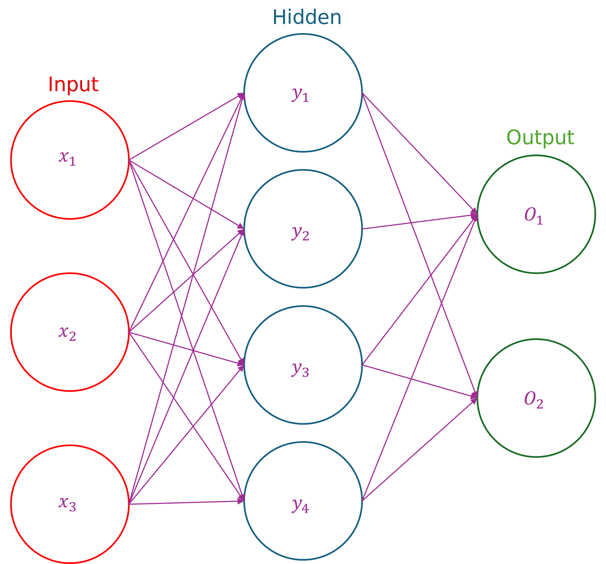

You can view the entire playlist here
How Neural Networks Learn (Gradient Descent)
Let’s assume that we have a model that takes two inputs: \(x_1\) (your weight at age 10) and \(x_2\) (your height at age 10) and outputs a prediction \(y\) for your final height as an adult.
Gradient descent is just a way to minimize a function. That’s it. So if I have a function like \(y = x^2\), we can minimize this pretty easily by taking the derivative and setting it equal to zero:
\[ \begin{align*} y &= x^2\\ y' &= 2x\\ 2x &= 0\\ x &= 0 \end{align*} \]
which corresponds to the minimum of \(y = x^2\). But that’s only for one input and one output. We usually have multiple inputs (like here it’s height and weight). So how can we handle that? What if we can’t even take the derivative?
Let’s back up and ask a more important question first. Why do we even need to minimize a function to train a model?
The function we’re minimizing is the error function. Aka the loss or the cost function, it is the error between the model’s prediction and the label (the actual value). In our example here, the error would be the difference between what the model thinks the final height should be given a 10 year-old’s weight (\(x_1\)) and height (\(x_2\)), and what the height actually is (the label). There are different ways we can calculate the error, but here we could do something simple like the absolute difference:
\[ \begin{equation*} \text{Error} \approx \left| \text{Prediction} - \text{label} \right| \end{equation*} \] Let’s build some intuition. Let’s return to \(y = x^2\). Gradient descent is typically called “stochastic gradient descent” (SGD), with “stochastic” referring to a random guess for the minimum. Let’s apply that here to \(y = x^2\). Let’s have an initial guess of \(x=3\) (remember that we know the actual minimum is \(x = 0\)). Let’s look at the slope of the tangent line at \(x = 3\), which is the same thing as the derivative or the gradient. Here it is positive:
\[ \begin{align*} f' &= 2 x\\ f' (x = 3) &= (2)(3) = 6 \end{align*} \]
which means that the function is increasing. If we want to minimize a function, we want to go in the opposite direction. We want to find where there is no change (\(f'=0\)), assuming the boundaries of the function do not contain the minima (that’s an easy check though). So our new guess:
\[ \text{New guess} = \text{old guess} - \left( \text{slope} \right) \left( \text{step size} \right) \] Let’s call the step size \(\alpha\). So more succinctly:
\[ \text{Guess} -= \text{slope} \cdot \alpha \] In Python, we could write a class that implements this:
class GradDescent:
def get_minimizer(self, iterations: int, learning_rate: float, guess: int) -> float:
for i in range(0, iterations):
guess -= (2*guess)*learning_rate
x = round(guess, 5)
return x
sol = GradDescent()
x = sol.get_minimizer(iterations=10, learning_rate=0.01, guess=5)
print(x)Multivariate Gradient Descent
Let’s say that we have a new function related with two variables:
\[ f(x,y) = x^2 + y^2 \] Now we have an actual gradient, that is
\[ \begin{align*} \nabla f(x,y) &= \left \langle \frac{\partial f}{ \partial x }, \frac{\partial f}{ \partial y } \right \rangle\\ &= \left \langle 2x, 2y \right \rangle \end{align*} \] So now we have two values to update (one for each component, \(x\) and \(y\)), which means that we also need two initial guesses for \(x\) and \(y\). So our updating algorithm now looks like this for \(x\):
\[ \begin{align*} \text{guess} &-= \frac{\partial f}{ \partial x } \bigg|_{x=x_{\text{guess}}} \cdot \alpha\\ &-= 2 x \bigg|_{x=x_{\text{guess}}} \alpha \end{align*} \] and for \(y\): \[ \begin{align*} \text{guess} &-= \frac{\partial f}{ \partial y } \bigg|_{y=y_{\text{guess}}} \cdot \alpha\\ &-= 2 y \bigg|_{y=y_{\text{guess}}} \alpha \end{align*} \] Note that the partial derivatives being the same here is purely a coincidence and is only because \(f(x,y)\) is defined as \(f(x, y)=x^2 + y^2\). If we had changed it to something like \(f(x, y) = x^3 - y^{1/2}\) or something like that, then the partial derivatives would obviously not be equal.
If you do the calculus, you find that the minimum of \(f(x,y)\) is at (0, 0). Here’s the code verifying that:
class GradDescentMulti:
def get_min(self, iterations: int, learning_rate: float, guess_x: int, guess_y: int) -> float:
for _ in range(0, iterations):
guess_x -= 2*guess_x * learning_rate
guess_y -= 2*guess_y * learning_rate
guess_x = round(guess_x, 5)
guess_y = round(guess_y, 5)
return guess_x, guess_y
gd = GradDescentMulti()
x_min, y_min = gd.get_min(iterations=1000, learning_rate=0.1, guess_x = 2, guess_y = 5)
print(f'x_min: {x_min}, y_min: {y_min}')x_min: 2e-05, y_min: 2e-05which within rounding precision is equal to zero for both \(x\) and \(y\).
Linear Regression: Full Explanation & Coding Problem
Linear regression is the foundation of neural networks and it behind many of the recent advancements in ChatGPT, self-driving, and deepfakes.
The “Regression” part
Classification
Let’s start with a more intuitive example, which is actually the opposite of regression and it’s classification. As an example, let’s say that we’re building a model that detects whether someone has diabetes. There are two (simplified) outcomes here: the person has diabetes or they don’t. So we’re classifying our input (maybe an image) into two classification “buckets”.
A more complicated example would be an object-detection model. So you give your model an input image and it tells you whether it’s a cat, a dog, an apple, or an orange. This is the same as the diabetes example, just with more classification buckets.
Regression
For regression, the output is a number that is real (between negative and positive infinity). So if you want a model that will predict someone’s final height given their current height, current weight, how tall their parent’s are (and possibly any other relevant features), the output exists on some scale (so a number). Unlike classification, regression returns a number (for our example, something like 70, for 70 inches in height which is 5’10”) instead of a category (like “orange”).
The “Linear” part
When we’re building our model, we want it to make some kind of prediction given some piece of information we provide. The linear part here is saying that the relationship between the input to the model (like the current height, current weight, parent’s height, etc.) and the output (final height) is linear, so it looks something like this:
\[ h(x, y, z) = w_1 x + w_2 y + w_3 z + b \] where
\[ \begin{align*} h &\text{ is the final height}\\ x &\text{ is the current weight}\\ y &\text{ is the current height}\\ z &\text{ is the parents' height}\\ w_n &\text{ is the model weight}\\ b &\text{ is the model bias}\\ \end{align*} \] The “linear” part is from \(h(x, y, z)\) being a linear equation. So there isn’t anythng like \(w_1 x^4\) or \(w_2 \cos{y}\). This means that, in short, we have a really fancy version of \(y = mx + b\), but \(m\) and \(x\) can have an arbitrary number of components or inputs.
Then, during training via gradient descent, the model will improve \(w_1, w_2, w_3, \ldots, w_n\) and \(b\) over some fixed number of iterations until the model is a pretty good way to predict someone’s final height given their current height, weight, and that of their parents.
The pseudocode for this would look something like:
for num_iterations:
get_model_prediction()
get_error() # want this to approach zero
get_derivatives()
update_weights()Focusing a bit more on the get_error() part, there are many different ways we can determine the error in a model, but one of the most common ones is called Mean Squared Error (MSE):
\[ \text{MSE} = \sum_{i = 1}^{N} \frac{\left( \text{prediction}_i - \text{label}_i \right)^2}{N} \] where \(N\) is the number of training examples, and recall that the label is defined as the “true” answer that we’re comparing our model’s prediction against.
A common question to ask here is why don’t we use the absolute value instead of squaring to get our error? This is because the derivative won’t exist somewhere. If we look at the most basic absolute value function, \(y = |x|\), we get something like this:
which has an undefined derivative at the origin (technically, this makes the absolute value function “non-differentiable”). In other words, for \(y = |x|\), \(y'\) doesn’t exist at \(x=0\), which would break the algorithm that we’ve developed so far. Squaring solves this problem and still gives us the same general idea as the absolute value, that is, tells us how good/bad the error is.
Implementing this in code, we use vectors and matrices:
\[ \begin{bmatrix} x & y & z \end{bmatrix} \begin{bmatrix} w_1\\ w_2\\ w_3 \end{bmatrix} = w_1 x + w_2 y + w_3 z = \text{model prediction} \] But what if we had many people? Let’s look at what this would look like if we had three people: \[ \begin{bmatrix} x_1 & y_1 & z_1\\ x_2 & y_2 & z_2\\ x_3 & y_3 & z_3 \end{bmatrix} \begin{bmatrix} w_1\\ w_2\\ w_3 \end{bmatrix} = \begin{bmatrix} w_1 x_1 + w_2 y_1 + w_3 z_1\\ w_1 x_2 + w_2 y_2 + w_3 z_2\\ w_1 x_3 + w_2 y_3 + w_3 z_3\\ \end{bmatrix} \] where each row is the model’s prediction for each person (i.e. the first row is the model’s prediction for the first person, second row is the prediction for the second person, etc.). An important note here is that at this point we’re just doing matrix multiplication. The main advantage of doing this in matrices vs. a loop is the following:
Programs can do this EXTREMELY fast
Implementation
Solution - First Problem
My solution to the first coding problem:
import numpy as np
from numpy.typing import NDArray
# Helpful functions:
# https://numpy.org/doc/stable/reference/generated/numpy.matmul.html
# https://numpy.org/doc/stable/reference/generated/numpy.mean.html
# https://numpy.org/doc/stable/reference/generated/numpy.square.html
class Solution:
def get_model_prediction(self, X: NDArray[np.float64], weights: NDArray[np.float64]) -> NDArray[np.float64]:
pred = np.matmul(X, weights)
return np.round(pred, 5)
# X is an Nx3 NumPy array
# weights is a 3x1 NumPy array
# HINT: np.matmul() will be useful
# return np.round(your_answer, 5)
def get_error(self, model_prediction: NDArray[np.float64], ground_truth: NDArray[np.float64]) -> float:
error = np.mean(np.square(model_prediction - ground_truth))
return round(error, 5)
# model_prediction is an Nx1 NumPy array
# ground_truth is an Nx1 NumPy array
# HINT: np.mean(), np.square() will be useful
# return round(your_answer, 5)Solution - Second Problem
import numpy as np
from numpy.typing import NDArray
class Solution:
def get_derivative(self, model_prediction: NDArray[np.float64], ground_truth: NDArray[np.float64], N: int, X: NDArray[np.float64], desired_weight: int) -> float:
# note that N is just len(X)
return -2 * np.dot(ground_truth - model_prediction, X[:, desired_weight]) / N
def get_model_prediction(self, X: NDArray[np.float64], weights: NDArray[np.float64]) -> NDArray[np.float64]:
return np.squeeze(np.matmul(X, weights))
learning_rate = 0.01
def train_model(
self,
X: NDArray[np.float64],
Y: NDArray[np.float64],
num_iterations: int,
initial_weights: NDArray[np.float64]
) -> NDArray[np.float64]:
for _ in range(num_iterations):
model_pred = self.get_model_prediction(X, initial_weights)
d1 = self.get_derivative(model_pred, Y, len(X), X, 0)
d2 = self.get_derivative(model_pred, Y, len(X), X, 1)
d3 = self.get_derivative(model_pred, Y, len(X), X, 2)
initial_weights[0] = initial_weights[0] - d1 * self.learning_rate
initial_weights[1] = initial_weights[1] - d2 * self.learning_rate
initial_weights[2] = initial_weights[2] - d3 * self.learning_rate
return np.round(initial_weights, 5)I initially struggled with this problem due to some of the syntax and eventually had to look at the solution because I was so stuck. I was quite close in my solution (basing the derivative section off of what I did for multivariate gradient descent), however I originally thought that desired_weight was what we wanted the weights to be at the end of training, which was confusing. It’s really just pointing to which weight we want to update (so for \(w_1\), desired_weight=0. for \(w_2\), desired_weight=1, etc.).
Neural Networks in 10 Minutes - End to End Explanation

Input attributes:
\[ \begin{align*} x_1 &\colon \text{parents' heights}\\ x_2 &\colon \text{current height}\\ x_3 &\colon \text{current weight}\\ \end{align*} \]
Linear Regression
Need linear regression to explain the connections and the hidden layer. Here’s the formula again:
\[ y = w_1 x_1 + w_2 x_2 + w_3 x_3 + b \] Remember that \(x_n\) are the input attributes and \(y\) is the model’s output/prediction. The weights \(w_n\) then determine the relative importance of each input parameter they are associated with. For example, \(w_1\) determines how important \(x_1\) (in this case the average parents’ height) is on someone’s final height (\(y\)).
What about the bias?
In this context, it would probably be some base height, since a final height of zero doesn’t make much sense.
Output Layer
We can think of the two outputs as \(O_1\) and \(O_2\). Just as in the previous layer, \(O_1\) and \(O_2\) are also calculated using a linear regression formula:
\[ \begin{align*} O_1 &= w_1 y_1 + w_2 y_2 + w_3 y_3 + w_4 y_4 + b\\ O_2 &= w_1 y_1 + w_2 y_2 + w_3 y_3 + w_4 y_4 + b\\ \end{align*} \]
BUT the difference here is that the \(w\)’s and the \(b\) for \(O_1\) are learned independently from \(O_2\) and are going to be different.
If the point of the model is to predict someone’s final height, that final prediction may be from averaging \(O_1\) and \(O_2\). Training then is figuring out what \(w_1\), \(w_2\), \(w_3\), \(w_4\), and \(b\) should be for \(y_1\) - \(y_4\) such that the error is minimized. The same thing is done for \(O_1\) and \(O_2\).
Intro to PyTorch. Forget TensorFlow
PyTorch might be the only library that is needed. Might need some other libraries like NumPy or Pandas, but can usually get away with only using PyTorch. Fundamental data type here is the Tensor. PyTorch (and the Tensor data type more specifically) will also take care of all the ugly math, like nasty derivatives and huge matrix multiplications.
>>> a = torch.ones(5, 5)
>>> print(a)
tensor([[1., 1., 1., 1., 1.],
[1., 1., 1., 1., 1.],
[1., 1., 1., 1., 1.],
[1., 1., 1., 1., 1.],
[1., 1., 1., 1., 1.]])First two important functions in PyTorch is sum() and mean():
>>> sum = torch.sum(a, axis=1) # Note that axis=1 corresponds to the rows, NOT the columns
>>> print(sum) # Print the sum of each column
tensor([5., 5., 5., 5., 5.])Also have squeeze() and unsqueeze(), which is used when we have unnecessary dimensions
>>> a = torch.ones(5, 1)
>>> print(a.shape)
torch.Size([5, 1])But the 1 is kind of unnecessary. Saying 5 x 1 is kind of unnecessary. So if we want to get rid of the 1 we can use the squeeze() method:
>>> print(a.shape)
>>> squeezed = torch.squeeze(a)
>>> print(squeezed.shape)
torch.Size([5, 1])
torch.Size([5])While this may seem like a small difference, it will have an impact on functions later on. Here’s the difference in a more visual way:
>>> print(a)
>>> print(squeezed)
tensor([[1.],
[1.],
[1.],
[1.],
[1.]])
tensor([1., 1., 1., 1., 1.])If we can squeeze something, we should also have some way to unsqueeze as well. If we’re passing in two tensors, like one for training and one for validation, they both need to be the same size. We can’t have one look like a and one look like squeezed.
Here, the argument dim is where we want to insert that extra dimension. So to make our tensor unsqueezed 5x1 instead of just 5, we pass dim=1:
>>> unsqueezed = torch.unsqueeze(squeezed, dim=1)
>>> print(unsqueezed.shape)
>>> print(unsqueezed)
torch.Size([5, 1])
tensor([[1.],
[1.],
[1.],
[1.],
[1.]])If instead we pass dim=0, we get the opposite:
>>> unsqueezed = torch.unsqueeze(squeezed, dim=0)
>>> print(unsqueezed.shape)
>>> print(unsqueezed)
torch.Size([1, 5])
tensor([[1., 1., 1., 1., 1.]])Defining Neural Network Models in PyTorch
We want something that looks like this:
class MyModel:
# Constructor - layers
# Forward pass - get_model_prediction(example_datapoint)Module Class
PyTorch has something like this, it’s called the Module class. A Module is basically the same thing as a model. Every model we create in PyTorch is going to inherit or subclass torch.nn.Module.
Linear Class
Remember that each layer in a neural network contains a bunch of nodes that are just doing linear regression based on the previous layer’s input attributes, so we need some class that can take in the previous layer’s input attributes, do linear regression, and then output them. That is what the Linear class does.
Example
If you just Google “Neural network”, you might find something like this:

Let’s build it!
Looks like our input layer has four nodes, and we have two hidden layers and one output layer. So we’re going to have three instances of nn.Linear.
class MyModel(nn.Module):
# Create constructor
def __init__(self):
super().__init__()
self.first_layer = nn.Linear(in_features=4, out_features=6)
self.second_layer = nn.Linear(in_features=6, out_features=6)
self.final_layer = nn.Linear(in_features=6, out_features=2)
# Create forward pass
def forward(self, x):
# Calling the forward method from the nn.Module class
# first_layer_output = self.first_layer.forward(x)
# Can also do the following:
# first_layer_output = self.first_layer(x)
return self.final_layer(self.second_layer(self.first_layer.forward(x)))>>> model = MyModel()
>>> example_datapoint = torch.randn(1, 4)
>>> model.forward(x=example_datapoint) # Can also write model(x=example_datapoint)
tensor([[-0.4633, -0.0682]], grad_fn=<AddmmBackward0>)Then we need to train the model for some number of iterations. We can then actually use the model to get predictions.
Coding Problem Solution
import torch
import torch.nn
from torchtyping import TensorType
# Helpful functions:
# https://pytorch.org/docs/stable/generated/torch.reshape.html
# https://pytorch.org/docs/stable/generated/torch.mean.html
# https://pytorch.org/docs/stable/generated/torch.cat.html
# https://pytorch.org/docs/stable/generated/torch.nn.functional.mse_loss.html
# Round your answers to 4 decimal places using torch.round(input_tensor, decimals = 4)
class Solution:
def reshape(self, to_reshape: TensorType[float]) -> TensorType[float]:
return torch.reshape(to_reshape, (to_reshape.size(dim=1)*to_reshape.size(dim=0)//2, 2))
def average(self, to_avg: TensorType[float]) -> TensorType[float]:
return torch.mean(to_avg, axis=0)
def concatenate(self, cat_one: TensorType[float], cat_two: TensorType[float]) -> TensorType[float]:
return torch.cat((cat_one, cat_two), dim=1)
def get_loss(self, prediction: TensorType[float], target: TensorType[float]) -> TensorType[float]:
return torch.nn.functional.mse_loss(input=prediction, target=target)Dropout
Dropout makes neural networks dumber on purpose. We do this to prevent overrfitting and to make a model generalize better.
Overfitting: When training accuracy is greater than testing accuracy.
Said another way,: The model looks incredible when it is training and looking at training data, but the second you give it testing (i.e. real-world or non-training) data, it performs horribly. The model is essentially memorizing the training dataset and not really learning anything. Visually (and from a mathematical perspective), overfitting looks like this:

Overfitting is usually caused by the model being too complex. Here, complex can mean a few things:
- The model has too many layers
- Each layer has too many nodes
Essentially, the model is just an equation, and right now that equation is way too complex. This is like having data that can be fit with just a linear equation, but a 10th order Taylor series is being used to approximate it.
Dropout aims to solve these problems. Let’s say we have a network like this:
Let’s say that we apply dropout to the entire output layer, but dropout only ends up applying to the first output node, \(O_1\). This means that this node is essentially turned off and its connections to the previous layer are severed (see the dotted lines). Mathematically, this equates to setting the equation for \(O_1\) equal to zero:
\[ O_1 = w_1 x + w_2 y + w_3 z + b = 0 \]
In PyTorch, this would look like nn.Dropout(p=0.2), where p is the propbability that the node is turned off. If we apply dropout to the entire output layer, each node would be turned off (set output or activation equal to zero) independently with probability \(p\).
Remember, overfitting occurs ebcause our model is too complex. So if dropout is to work, it has to reduce our model’s complexity. And we can see that is exactly what is happening. In other words, what dropout is doing is making the model more stupid so it doesn’t focus on unnecessary/irrelevant noise.
Dropout has been found to increase teseting accuracy, especially as models get deeper (i.e. have more layers).
Coding Problem Solution
This was a very poorly written question. It should have been stated as the following:
Model architecture takes in a 28*28 image and sends that to 512 neurons (use a linar layer for this). This is then followed by a ReLU activation function and then a dropout layer with probability p=0.2. Then there is a final linear layer that shrinks 512 neurons down to 10, followed finally by a sigmoid activation function.
import torch
import torch.nn as nn
from torchtyping import TensorType
class Solution(nn.Module):
def __init__(self):
super().__init__()
torch.manual_seed(0)
self.first_linear = nn.Linear(in_features=784, out_features=512)
self.relu = nn.ReLU()
self.drop = nn.Dropout(p=0.2)
self.second_linear = nn.Linear(in_features=512, out_features=10)
self.sigmoid = nn.Sigmoid()
# Define the architecture here
def forward(self, images: TensorType[float]) -> TensorType[float]:
torch.manual_seed(0)
out = self.sigmoid(self.second_linear(self.drop(self.relu(self.first_linear(images)))))
# Return the model's prediction to 4 decimal places
return torch.round(out, decimals=4)Training Neural Networks in PyTorch
import torch
import torch.nn as nn
torch.manual_seed(0)
class DigitRecognition(nn.Module):
def __init__(self):
super().__init__()
torch.manual_seed(0)
self.first_linear = nn.Linear(in_features=784, out_features=512)
self.relu = nn.ReLU()
self.drop = nn.Dropout(p=0.2)
self.second_linear = nn.Linear(in_features=512, out_features=10)
self.sigmoid = nn.Sigmoid()
# Define the architecture here
def forward(self, images: float) -> float:
torch.manual_seed(0)
out = self.sigmoid(self.second_linear(self.drop(self.relu(self.first_linear(images)))))
return outHow do we actually update this model over many iterations? Here we’re going to look at the training loop. The following code is the same regardless of the neural network:
model = DigitRecognition()
loss_function = nn.CrossEntropyLoss()
optimizer = torch.optim.Adam(model.parameters())
epochs = 5
for epoch in range(epochs):
for images, labels in train_dataloader():
images = images.view(images.shape[0], 784)
# Training body
model_prediction = model(images)
optimizer.zero_grad()
loss.loss_function(model_prediction, labels)
loss.backward()
optimizer.step()Let’s break this down a bit:
model = DigitRecognition()This is instantiating our model. This could change depending on the task we are doing, but we still need to instantiate some kind of model.
loss_function = nn.CrossEntropyLoss()This is our loss function. Here it’s cross-entropy loss instead of MSE since we are doing a classification problem instead of a regression problem. Again, the loss function will vary depending on the application, but we still need one.
optimizer = torch.optim.Adam(model.parameters())This is an object in PyTorch that does gradient descent for us. What we need to pass in are the weights (parameters). Adam is gradient descent on steroids. It is still doing gradient descent (with a default learning rate), but is optimized to dynamically change the learning rate.
epochs = 5An epoch is a single pass through the entire dataset. So here, the model is passing through the entire training dataset 5 times. Too many epochs might result in overfitting, too few might mean the weights haven’t been updated enough.
for images, labels in train_dataloader():train_dataloader() is just a sequence of steps to take in the raw data and do any preprocessing on it before it is fed to the network (for images, this might be things like resizing, cropping, or random reflections).
images = images.view(images.shape[0], 784)Could have also used images = images.reshape(...), but we’re reshaping the image from 28 * 28 to a single vector with length 784 so that the network (which has a first layer with 784 neurons) can take it in.
model_prediction = model(images)This is calling the forward() method of the model class we defined earlier and gets our model predictions.
optimizer.zero_grad()This is a frustrating line that really shouldn’t be required in PyTorch, but it cancels out all of the derivatives that were calculated from the previous iteration of gradient descent. This is done because for each iteration, we want to calculate the derivatives again so that we can update our weights. This line resets the derivatives so we can do this.
loss.loss_function(model_prediction, labels)This is calculating the loss/error based on our current model’s prediction and the labels.
loss.backward()Potentially the most important line here. This will calculate every single derivative necessary to perform gradient descent. This is the most computationally intensive step of this entire program. It is calculating all of the derivatives and is storing them in such a way that we can use them later.
optimizer.step()This updates all of the weights, so essentially doing \(\text{new weight} = \text{old weight} - \text{derivative} \cdot \text{learning rate}\). Next chunk:
model.eval()
for images, labels in test_dataloader:
images = images.view(images.shape[0], 784)
model_prediction = model(images)
max, idx = torch.max(model_prediction, dim=1)
for i in range(len(images)):
plt.imshow(images[i].view(28, 28))
plt.show()
print(idx[i].item())
breakThis is showing us how well the model is doing once training is done.
model.eval()This puts the model in evaluation mode. We’re telling PyTorch that we just want the model’s predictions, so it doesn’t need to calculate any derivatives for training.
Then we iterate over our test dataloader, reshape our images, pass them into the model, and get our predictions. For every image, we’re predicting a bunch of probabilities (specifically 10). So we should take the maximum probability and map that to the class. This lets us see the image and the corresponding digit the model thinks it is. Then iterate over each image and do this.
Intro to NLP
Solving a problem with no background in NLP that requires an understanding of NLP to complete is stupid. So I’m watching the video first.
Tokenization: How text is broken up. Is it broken up into words, characters, parts of words, etc. * How will each token be encoded, or converted from a raw text string to an integer?
what we need to do ehre is map each token to an integer. So we need some dictionary that maps tokens to integers.
The Setup
First need to construct a list of all the unique words in the dataset. Something that can do this is a hash set, or a set in Python. We can then convert the set to a list, sort it, and create the dictionary.
class Solution:
def get_dataset(self, positive: List[str], negative: List[str]) -> TensorType[float]:
vocabulary = set()
for sentence in positive: # Loop through each sentence in the positive dataset
for word in sentence.split(): # Extract each word in the sentence
vocabulary.add(word) # Use .add() instead of .append() since .add() is for sets, .append() is for lists
for sentence in negative:
for word in setence.split():
vocabulary.add(word)
list_convert = list(vocabulary) # Convert vocabulary to a list
sorted_list = sorted(list_convert) # Get sorted list from low to high like we talked about earlier
# Now we want to build our dictionary to convert words to integers
word_to_int = {}
for i in range(len(sorted_list)):
word_to_int[sorted_list[i]] = i + 1 # Key is the index in the list, value is starting at the smallest and going up from there (i+1 since we have zero indexing)
# Encode every sentence as a tensor of integers
tensors = []
for sentence in positive:
current_list = []
for word in sentence.split():
current_list.append(word_to_int[word]) # Getting the integer conversion for that word and putting it into a list
tensors.append(torch.tensor(current_list)) # Convert current_list to a tensor and append it to tensors
for sentence in negative:
current_list = []
for word in sentence.split():
current_list.append(word_to_int[word]) # Getting the integer conversion for that word and putting it into a list
tensors.append(torch.tensor(current_list)) # Convert current_list to a tensor and append it to tensors
return nn.utils.rnn.pad_sequence(tensors, batch_first=True) # Pad tensors with zeros so they are all the same lengthMachine Learning on Tweets
Sentiment analysis: Given some text (sentence, paragraph, etc.), we want to feed this into some kind of model:
flowchart LR
A(Text) --> B(Neural network)
B --> C{Evaluate}
C --> D(Positive)
C --> E(Negative)
There are many applications for this, like Tweets impacting the stock market. One important concept here is that of embeddings:
Embeddings: Learning a vectorized representation of every token in our model’s vocabulary.
Example sentence: “I loved that movie” might be mapped in the following way:
\[ \begin{align*} \text{I} &\rightarrow 0\\ \text{loved} &\rightarrow 2\\ \text{that} &\rightarrow 1\\ \text{movie} &\rightarrow 4 \end{align*} \] So we would feed the following vector into the model: [0, 2, 1, 4]. The first step is the model understanding the meaning of these tokens independently. Remember, the specific embeddings here are arbitrary; the important thing is the relationship between the embeddings. These embedding vectors are tweaked during training.
Embedding dimension: How long each embedding is (i.e. is a single token represented as [2], [2, 1, 4], [2, 1, 4, 6, 8], etc.) The higher this number, the more complex relationships our model can pick up on.
Embeddings start off randomly, but are then closer to other, similar embeddings. Mathematically, embeddings that are more similar to each other have a dot product that is large. For example, the dot product between the embeddings for “man” and “woman” would be higher than the dot product between the embeddings for “leaf” and “chair”.
Model Architecture
flowchart LR
A(Input, size BxT) --> B(Embedding layer)
B -- BxTxC --> C(Avg.)
C -- BxC --> D(Linear layer)
D -- Bx1 --> E(Sigmoid)
With the final output being a number between zero and one for every input example in our training batch. Example breaking down the variables:
\[ \begin{bmatrix} \text{I} & \text{loved} & \text{that} & \text{movie}\\ \text{I} & \text{hated} & \text{that} & \text{movie}\\ \end{bmatrix} \] here, \(B=2\) and \(T = 4\), with \(C\) being our embedding dimension.
Lookup Table
Let’s say that the following mappings are true:
\[ \begin{align*} \text{I} &\rightarrow 0 \rightarrow[0, 0, 1, 0, 0, 0]\\ \text{loved} &\rightarrow 2 \rightarrow[1, 0, 0, 0, 0, 0]\\ \text{that} &\rightarrow 1 \rightarrow[0, 0, 0, 1, 0, 0]\\ \text{movie} &\rightarrow 4 \rightarrow[0, 0, 0, 0, 1, 0] \end{align*} \] We could create a new matrix where each how is the learned/trained representations of the model’s covabulary in each row. If we matrix multiply these two matrices, we get the learned representations of our model’s vocabulary. This is an example of one-hot encoding (or one-hot input).
Coding Problem Solution
import torch
import torch.nn as nn
from torchtyping import TensorType
class Solution(nn.Module):
def __init__(self, vocabulary_size: int):
super().__init__()
torch.manual_seed(0)
self.embedding_layer = nn.Embedding(vocabulary_size, 16)
self.linear_1 = nn.Linear(in_features=16, out_features=1)
self.sigmoid = nn.Sigmoid()
def forward(self, x: TensorType[int]) -> TensorType[float]:
# Hint: The embedding layer outputs a B, T, embed_dim tensor
# but you should average it into a B, embed_dim tensor before using the Linear layer
embeddings = self.embedding_layer(x)
averages = torch.mean(embeddings, axis=1)
linear = self.linear_1(averages)
sigmoid_out = self.sigmoid(linear)
return torch.round(sigmoid_out, decimals=4) Illustrated Guide to Attention - How ChatGPT Reads
Let’s start out by thinking of these large language models (LLMs)/generative pretrainted transformers (GPTs) as a black box:
flowchart LR
A(Words) --> B[LLM/GPT]
B --> C(Response)
To get computers to read, it makes sense to consider how humans read. We don’t read word-by-word, but instead word-by-word while considering the relationships that came before the current one in a sentence. For example:
Gertrude lead the horse The President has to lead Lead shields against X-rays Here, “lead” is the same work but has different meanings. For each input string of length \(T\), the model generates a score of how related two words are with each other.
The Mathematical Explanation
Main idea: We want our model to be context-aware of the words in a sentence. Not just figure out the next word, but instead know how they’re related. Each word has two vectors associated with it: a key and a query. A query vector represents what the word is searching for (querying), and a word’s key vector might be what it has to offer the query.
Here’s an example sentence:
The tall man runs.
The query vector associated with “tall” might say that it is looking for a noun to describe, and the key vector associated with “man” might give an indication that it is a noun. We then take the dot product between every (for example) noun’s query and every (for example) adjective’s key. Those values populate something called the **attention matrix*, which is a measure of how related any two words in a sentence are to each other.
The key and query vectors for every word are calculated via linear regression. Before each word is passed into the attention block, each word is converted into an embedding vector. So we have one network that takes in embeddings and outputs queries, and another that takes in embeddings and outputs keys. We also have a value vector, which is then multiplied with the attention matrix, giving us the final output of the attention layer: “The \(\text{i}^{\text{th}}\) entry in the new representation of a word is just the average of all the \(\text{i}^{\text{th}}\) entries of the value vectors for the neighboring words weighted by the attention score for each pair of words, which factors in how important that pair is. Put shortly, the output of the attention matrix is an updated vector for every word that factors in the importance of the neighboring words.
Citation
BibTeX citation:
@online{gregory2024,
author = {Gregory, Josh},
title = {GPT and {Chill} {Notes}},
date = {2024-06-07},
url = {https://joshgregory42.github.io/posts/2024-06-07-gpt-chill/},
langid = {en}
}
For attribution, please cite this work as:
Gregory, Josh. 2024. “GPT and Chill Notes.” June 7, 2024.
https://joshgregory42.github.io/posts/2024-06-07-gpt-chill/.